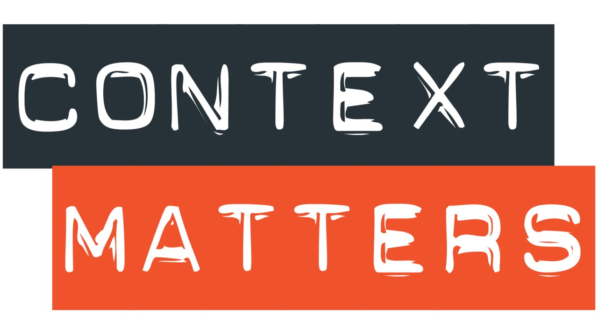

接上一篇 Chatbot 1 - 使用 Dialogflow 十分钟搭建虚拟助手，这次我们将不再依赖 Dialogflow 提供的功能，而是从零到一手写代码，探索聊天机器人的基本工作原理，并搭建一个意式餐厅的在线客服机器人。
训练对话意图
上篇中，我们在 Dialogflow 中的 Intent 中设置了一系列的对话，作为模型学习的样本。这里我们同样需要为机器人构建不同的 Intent 可能遇到的问题和回答，以提供给神经网络模型学习，配置的内容通过 JSON 格式保存。下面示例展示「推荐菜单」这个意图的定义。完整版的 JSON 文件在这里。
{
"intents": [
{
"intent": "dishes",
"phrases": ["你们有什么推荐菜吗", "顾客经常会点什么菜", "大家喜欢吃什么菜", "你们最好吃的菜是什么"],
"replies": ["罗勒披萨、千层面和海鲜饭", "顾客喜欢我们的罗勒披萨、千层面和海鲜饭", "罗勒披萨比较受欢迎，千层面和海鲜饭也值得推荐"]
},
...
]
}
- intent: 意图标签
- phrases: 该意图可能的问题，将会被神经网络学习
- replies: 可能的回答
加载 JSON 文件，并对文本内容进行预处理 - 分词和去停词。
# 加载 JSON 文件
with open('intents.json') as json_data:
intents = json.load(json_data)
words = [] # 词汇表
classes = [] # 意图类型
documents = [] # 句子
ignore_words = ["？", "的", "。", "！", "你们", "是", "有", "吗", "我", "想", "我能", "不", "什么", "最"]
suggest_words = ["老板好", "下次见"]
for word in suggest_words:
jieba.suggest_freq(word, True)
# 文本预处理
for intent in intents['intents']:
for phrase in intent['phrases']:
w = list(jieba.cut(phrase, cut_all=False))
words.extend(w)
documents.append((w, intent['intent']))
if intent['intent'] not in classes:
classes.append(intent['intent'])
words = [w for w in words if w not in ignore_words]
words = sorted(list(set(words)))
classes = sorted(list(set(classes)))
print(len(documents), "documents")
print(len(classes), "classes", classes)
print(len(words), "words", words)
共有 25 句话，8 个意图类别，48 个不一样的词。
25 documents
8 classes ['book', 'dishes', 'goodbye', 'greeting', 'hours', 'promotions', 'thanks', 'today']
48 words ['Hello', '下次', '不', '什么', '今天', '会', '你们', '你好', '促销', '关门', '再见', '几点', '吃', '吗', '喜欢', '在', '大家', '好', '好吃', '帮助', '店内', '座位', '开门', '想', '感谢', '我', '我能', '打折', '拜拜', '推荐', '支持', '是', '晚上', '最', '最近', '有', '有人', '活动', '点', '经常', '老板', '菜', '营业时间', '见', '订餐', '谢谢', '顾客', '预定']
Tensorflow 只能读取数值，因此我们需要将预处理好的文本转为向量，这样才能训练。训练的过程是为了学习问题的意图，因此意图的标识作为训练的标签。使用词袋模型对文本向量化的代码如下：
training = []
output = []
output_empty = [0] * len(classes)
for doc in documents:
bag = []
pattern_words = doc[0]
for w in words:
bag.append(1) if w in pattern_words else bag.append(0)
output_row = list(output_empty)
output_row[classes.index(doc[1])] = 1
training.append([bag, output_row])
random.shuffle(training)
training = np.array(training)
train_x = list(training[:, 0])
train_y = list(training[:, 1])
处理后的向量变为：
train_x[0]:
[0, 0, 0, 1, 0, 0, 0, 0, 0, 0, 0, 0, 0, 1, 0, 0, 0, 0, 0, 0, 1, 0, 0, 0, 0, 0, 0, 0, 0, 0, 0, 0, 0, 0, 1, 1, 0, 1, 0, 0, 0, 0, 0, 0, 0, 0, 0, 0]
train_y[0]:
[0, 0, 0, 0, 0, 1, 0, 0]
现在我们可以训练文本分类的神经网络模型了。这里使用 tflearn 这个包，它对 Tensorflow 做了封装，使得开发更加便捷。
tf.reset_default_graph()
net = tflearn.input_data(shape=[None, len(train_x[0])])
net = tflearn.fully_connected(net, 12)
net = tflearn.fully_connected(net, 12)
net = tflearn.fully_connected(net, len(train_y[0]), activation='softmax')
net = tflearn.regression(net)
model = tflearn.DNN(net, tensorboard_dir='saved/tflearn_logs')
model.fit(train_x, train_y, n_epoch=800, batch_size=10, show_metric=True)
训练完之后，保存模型和数据，方便下一步的使用。
model.save('saved/model.tflearn')
pickle.dump({'words': words, 'classes': classes, 'train_x': train_x, 'train_y': train_y}, open("saved/training_data", "wb"))
构建自动回答模块
上面的步骤完成了意图分类模型的训练，我们将在此基础上开发问题回答模块。这个模块将独立于之前的训练模型，这样就避免了反复训练模型。导入之前的模型和数据。注意，模型在导入之前，需要预先定义好模型结构。
data = pickle.load(open("saved/training_data", "rb"))
words = data['words']
classes = data['classes']
train_x = data['train_x']
train_y = data['train_y']
with open('intents.json') as json_data:
intents = json.load(json_data)
tf.reset_default_graph()
net = tflearn.input_data(shape=[None, len(train_x[0])])
net = tflearn.fully_connected(net, 8)
net = tflearn.fully_connected(net, 8)
net = tflearn.fully_connected(net, len(train_y[0]), activation='softmax')
net = tflearn.regression(net)
model = tflearn.DNN(net, tensorboard_dir='saved/tflearn_logs')
model.load('saved/model.tflearn')
构建一个预处理函数，将文本转为向量。
def bow(sentence, words):
sentence_words = list(jieba.cut(sentence, cut_all=False))
bag = [0] * len(words)
for s in sentence_words:
for i, w in enumerate(words):
if w == s:
bag[i] = 1
return np.array(bag)
print(bow("餐厅营业时间是几点？", words))
[0 0 0 0 0 0 1 0 0 0 0 1 0 0 0 0 0 0 0 0 0 0 0 0 0 0 0 0 0 0 0 1 0 0 0 0 0 0 0 0 0 0 1 0 0 0 0 0]
OK，现在我们可以写判断意图的分类函数了。分类函数将会按照概率的从高到低，返回意图的列表。回答问题的函数，将会挑可能性最高的，从对应地已有回答中随机挑选一个。
ERROR_THRESHOLD = 0.01
def classify(sentence):
results = model.predict([bow(sentence, words)])[0]
results = [[i, r] for i, r in enumerate(results) if r > ERROR_THRESHOLD]
results.sort(key=lambda x: x[1], reverse=True)
return_list = []
for r in results:
return_list.append((classes[r[0]], r[1]))
return return_list
def reply(sentence):
results = classify(sentence)
while results:
for i in intents['intents']:
if i['intent'] == results[0][0]:
return print(random.choice(i['replies']))
results.pop(0)
测试分类效果，注意，这里「晚上营业到几点？」并没有在 JSON 文件中定义过，分类器也可以推断出意图。因为模型能从「晚上」「营业」「几点」中推断出该问题的意图是 。
>>> classify("晚上营业到几点")
[('hours', 0.8909908)]
>>> reply("晚上营业到几点")
我们营业时间是 9am-9pm
更多测试：
>>> reply("最近有什么打折活动吗？")
本周三酒水饮料自助，会员支付 8 折优惠
>>> reply("推荐一些菜吧")
罗勒披萨、千层面和海鲜饭
添加上下文场景
现实中的对话都是有上下文场景的。我们将会为聊天机器人添加一个简单的上下文：当用户问过预定座位的问题后，接下来只要告诉机器人「今天」，机器人就会结合先前的意图，推断出用户想要「在今天预定座位」。该功能需要借助状态机来实现 - 在程序中保存用户的意图状态，并在新的意图出现时用来做推断。另外，状态是有时间限制的，这里，我们默认用户在开启新的一段对话时，状态被重新初始化。
更新 JSON 文件中的 greeting、book、today 三个意图如下：
{
"intent": "greeting",
"phrases": ["你好", "在不", "有人在不", "Hello", "老板好"],
"replies": ["您好，有什么可以帮您", "很高兴见到您", "欢迎来到本店"],
"context_set": ""
},
{
"intent": "book",
"phrases": ["我能订餐吗", "我想预定座位", "你们支持预定座位吗"],
"replies": ["请问您定今天的座位还是本周的？", "可以，请问是今天还是明天的？"],
"context_set": "bookday"
},
{
"intent": "today",
"phrases": ["今天"],
"replies": ["OK，正在为您接通本店电话，请稍等。", "好的，我们将为您拨通门店电话，预定座位。"],
"context_filter": "bookday"
}
更新推断函数：
context = {"context_set": ""}
def reply(sentence):
results = classify(sentence)
while results:
for i in intents['intents']:
if i['intent'] == results[0][0]:
if "context_set" in i:
context["context_set"] = i["context_set"]
if "context_filter" not in i or \
("context_filter" in i and i["context_filter"] == context["context_set"]):
return print(random.choice(i['replies']))
results.pop(0)
测试一下上下文场景是否生效：
>>> reply("我能订餐吗")
可以的，请问是今天还是明天的？（context）
>>> reply("今天")
OK，正在为您接通本店电话，请稍等。
当用户发起一段新的对话（Hello 会清空 context），会发现上下文不一样，回复不同。
>>> classify("Hello")
[('greeting', 0.9974165)]
>>> classify("今天")
[('today', 0.9824814), ('hours', 0.032728897)]
>>> reply("今天")
我们营业时间是 9am-9pm
至此，所有的工作已经完成。未来可以为它添加更丰富的上下文场景和功能。Enjoy！